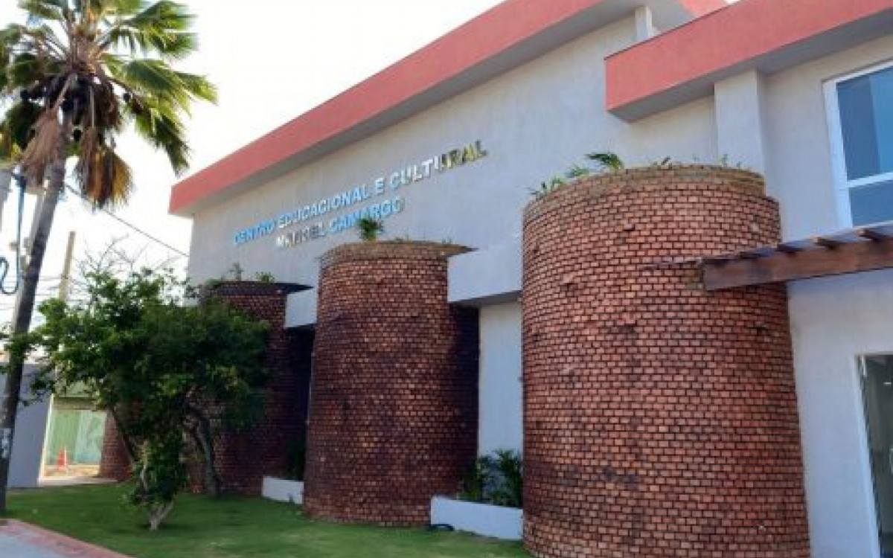

Arraial do Cabo
Arraial do Cabo, localizado na Região dos Lagos, no estado do Rio de Janeiro, é um dos destinos turísticos mais procurados por aqueles que buscam um contato mais íntimo com a natureza, praias paradisíacas e tranquilidade. Conhecida como a "Capital do Mergulho", a cidade é famosa por suas águas cristalinas, rica fauna marinha e paisagens deslumbrantes, sendo um paraíso para os amantes de ecoturismo e esportes aquáticos. Sua proximidade com outras cidades turísticas da região, como Cabo Frio e Búzios, a torna um destino acessível e atraente para os turistas.
A cidade oferece não apenas praias de beleza estonteante, mas também um ambiente acolhedor, com uma atmosfera tranquila e menos agitada que outros destinos mais turísticos do estado. Arraial do Cabo tem se destacado pela preservação ambiental e pela diversidade de atividades ao ar livre, como mergulho, trilhas e passeios de barco. Sua beleza natural, além de sua infraestrutura crescente, tem atraído tanto turistas nacionais quanto internacionais, consolidando-se como um destino de destaque na Região dos Lagos.
Principais pontos turísticos
- Praia do Farol
- Praia do Pontal do Atalaia
- Praia do Forno
A Praia do Farol é uma das mais famosas e deslumbrantes de Arraial do Cabo, com águas cristalinas e areia branca. Considerada uma das praias mais bonitas do Brasil, ela faz parte de uma área de preservação ambiental, o que garante um ambiente praticamente intocado. Para acessar a praia, os turistas devem pegar barcos a partir do Porto de Arraial.
Frequentemente classificada entre as praias mais bonitas do Brasil, a Praia do Farol é um cartão-postal de Arraial, com sua beleza natural exuberante e águas perfeitas para a prática de snorkeling e mergulho.
Conhecida por suas águas claras e tranquilas, a Praia do Pontal do Atalaia é cercada por grandes falésias e tem um acesso um pouco mais difícil, o que a torna menos lotada do que outras praias. A praia é famosa pelo seu mirante, que proporciona uma vista espetacular da região.
A praia é uma das mais procuradas para quem deseja tranquilidade e um visual incrível. É também um excelente local para a prática de esportes aquáticos, como snorkeling e stand-up paddle.
A Praia do Forno é uma pequena baía cercada por montanhas e vegetação nativa, com águas calmas e claras. O acesso à praia pode ser feito a pé por uma trilha de cerca de 20 minutos ou por barco.
É uma das praias mais acessíveis de Arraial do Cabo e, ao mesmo tempo, preserva um ambiente sossegado e natural, ideal para nadar e relaxar.
Principais pontos gastronômicos
- Casa da Piedra
- Localização: Praia dos Anjos.
- Restaurante Garrafa de Nansen
- Localização: Praia dos Anjos.
- El Farol Bar
- Localização: Praia dos Anjos.
A Casa da Piedra é um dos restaurantes mais elogiados de Arraial do Cabo, o ambiente é charmoso e repleto de detalhes na decoração. Destaque para os painéis que contam a história da cidade e da casa, que é uma das primeiras construções do país, um patrimônio histórico.
O atendimento e os pratos são impecáveis! Risotos, massas, carnes, peixes, frutos do mar... opções para todos os gostos, sem falar nos drinks e nas sobremesas divinas. Para completar, sempre rola música ao vivo a noite. É o tipo de lugar que a gente vai embora já com vontade de voltar.
O restaurante Garrafa de Nansen é um estabelecimento acolhedor que oferece uma variedade de pratos feitos com ingredientes frescos, com destaque para os frutos do mar, pescados na região. Além disso, o cardápio também oferece carnes, grelhados, massas, porções de petiscos, além de sobremesas.
Um dos pratos mais tradicionais e pedidos no Garrafa de Nansen é o camarão à condorvert, com espinafre e molho de queijo gratinado. As moquecas de peixe e camarão também fazem sucesso, junto com a casquinha de siri.
O El Farol Bar é parada obrigatória para quem pensa em curtir a noite em Arraial. Com atmosfera despojada e serviço de qualidade, esse bar na Praia dos Anjos é perfeito para ouvir música ao vivo, comer aperitivos e beber uns bons drinques no happy hour.
No cardápio, você encontra vinhos finos, refeições e porções, como isca de peixe, pizza, hambúrgueres, entre outras opções. Para acompanhar, vale pedir a caipirinha da casa. Se a ideia é relaxar com a galera depois da praia, o Bar El Farol não pode ficar de fora do seu roteiro.
Principais pontos culturais
- Igreja de Nossa Senhora dos Remédios
- Localização: Centro de Arraial do Cabo.
- Museu Oceanográfico
- Localização: Centro de Arraial do Cabo.
- Cultural Center 
- Localização: Centro de Arraial do Cabo.
A Igreja de Nossa Senhora dos Remédios é um dos marcos históricos de Arraial do Cabo, com uma arquitetura simples e charmosa. A igreja tem grande importância para a comunidade local e é um ponto de parada para quem deseja conhecer um pouco mais sobre a história religiosa da cidade.
É o centro religioso de Arraial, sendo um local de devoção para os moradores e um ponto cultural interessante para quem visita a cidade.
O Museu Oceanográfico de Arraial do Cabo é dedicado à preservação e ao estudo da vida marinha da região. O museu abriga diversas exposições sobre a fauna marinha local e a história do ecossistema costeiro.
O museu é uma excelente opção para quem deseja aprender mais sobre o ambiente marinho e a biodiversidade que torna Arraial do Cabo um dos principais destinos de mergulho do Brasil.
O Centro Cultural de Arraial do Cabo promove diversas atividades culturais, incluindo exposições de arte, apresentações musicais e eventos relacionados à cultura local. O centro também abriga uma pequena galeria com obras de artistas locais e regionais.
Serve como um espaço de expressão cultural e artística para a cidade, além de ser um ponto de encontro para turistas e moradores interessados na arte local.